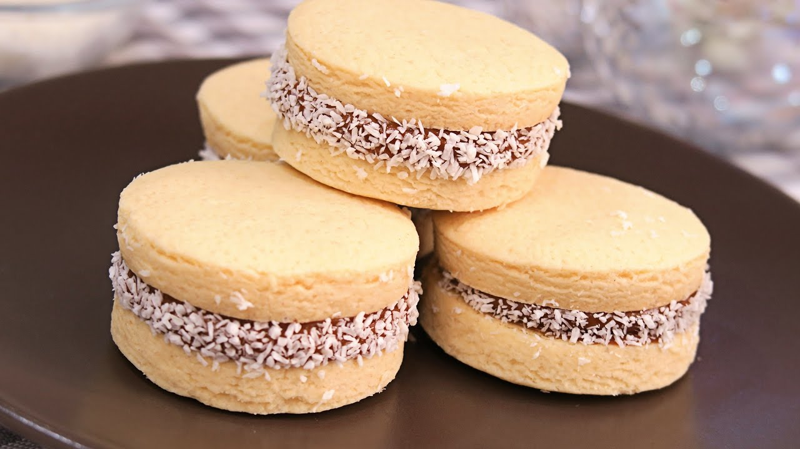

Alfajores de Maicena
Ingredientes
- 200 g de Harina
- 300 g de fécula de Maíz
- ½ Cdita de Bicarbonato de sodio
- 2 Cdita(s) de Al ras de polvo para hornear
- Gramos de Manteca
- 150 g de Azúcar
- 3 Yemas
- 1 Cda de Coñac
- 1 Cdita de Esencia de vainilla
- 1 Cdita Llena de ralladura de limón
- Dulce de leche para rellenar
- Coco rallado: Cantidad necesaria
Preparación
- Tamizar la fécula de maíz, la harina, el bicarbonato y el polvo para hornear.
- En un bol, batir la manteca con azúcar. Agregar las yemas de a una, mezclando bien cada vez, luego el coñac y poco a poco los ingredientes secos ya tamizados. Incorporar la esencia de vainilla y la ralladura de limón y mezclar bien.
- Separar la masa en tres partes, dejar una parte blanca y colorear las otras dos con los colores elegidos.
- Formar una masa, sin amasarla, y estirar de 1/2 cm de espesor sobre una mesa espolvoreada con harina. Cortar con moldes en forma de corazón.
- Colocar en una placa limpia y cocinar en horno moderado durante 15 minutos. Desmoldar y enfriar.
- Formar los alfajores, uniéndolos de a dos con dulce de leche en el medio.
- Pintarles el borde con dulce y pasarlos por coco rallado.
